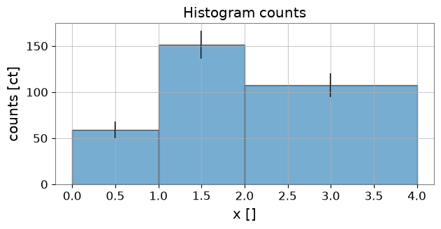
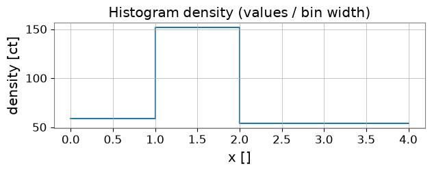

Note
このページは Jupyter Notebook から生成されました。 ノートブックをダウンロード (.ipynb)
[1]:
# Skipped in CI: Colab/bootstrap dependency install cell.
ヒストグラム: 基本
このチュートリアルでは gwexpy.histogram.Histogram を紹介します。内容は次の通りです：
ヒストグラムの作成（合計値から、
.fill()によるイベントから）可視化（カウント表示・密度表示）
基本統計（平均・中央値・分散・分位）
リビン（共分散の伝播）
積分（誤差伝播付き）
シリアライズ（HDF5 と JSON）
ROOT 連携（任意依存,
try/exceptで安全に扱う）
gwexpy の conda 環境で実行することを推奨します。
[2]:
import warnings
warnings.filterwarnings("ignore", category=UserWarning)
warnings.filterwarnings("ignore", category=DeprecationWarning)
# Environment check
import sys
import matplotlib.pyplot as plt
import numpy as np
from astropy import units as u
from gwexpy.histogram import Histogram
print('python', sys.version.splitlines()[0])
print('numpy', np.__version__)
print('astropy', u.__version__ if hasattr(u, '__version__') else 'unknown')
python 3.11.15 | packaged by conda-forge | (main, Mar 5 2026, 16:45:40) [GCC 14.3.0]
numpy 2.4.4
astropy unknown
1. ヒストグラムの作成
一般的な作成方法：
ビンの合計値（totals）とビンエッジから直接作る
イベント列を
.fill()で集計して作る（astropy.units.Quantityの重みをサポート）
[3]:
# 1.1 Direct construction from totals
edges = np.array([0.0, 1.0, 2.0, 4.0])
values = np.array([10.0, 25.0, 15.0]) # bin totals
h = Histogram(values=values, edges=edges, unit='count')
h
[3]:
<Histogram (nbins=3, unit=ct)>
[4]:
# 1.2 Creating from events with weights (Quantity)
rng = np.random.RandomState(42)
events = np.concatenate([
rng.normal(0.5, 0.1, size=50),
rng.normal(1.6, 0.2, size=120),
rng.normal(3.0, 0.3, size=80)
])
weights = u.Quantity(rng.uniform(0.5, 2.0, size=events.size), unit='count')
h2 = Histogram(values=np.zeros(len(edges)-1), edges=edges, unit='count').fill(events, weights=weights)
h2
[4]:
<Histogram (nbins=3, unit=ct)>
2. 可視化
ビンごとの合計（エラーバーあり）と密度（値/ビン幅）を表示します。
[5]:
# Plot counts with errorbars
fig, ax = plt.subplots(figsize=(7,3))
centers = h2.bin_centers.value
widths = h2.bin_widths.value
counts = h2.values.value
errs = (h2.errors.value if h2.errors is not None else None)
ax.bar(centers, counts, width=widths, align='center', edgecolor='k', alpha=0.6)
if errs is not None:
ax.errorbar(centers, counts, yerr=errs, fmt='none', ecolor='k')
ax.set_xlabel(f"x [{h2.xunit}]")
ax.set_ylabel(f"counts [{h2.unit}]")
ax.set_title('Histogram counts')
plt.show()

[6]:
# Density plot (values / bin width)
density = h2.to_density()
fig, ax = plt.subplots(figsize=(7,2))
ax.step(h2.edges.value, np.append(density.value, density.value[-1]), where='post')
ax.set_xlabel(f"x [{h2.xunit}]")
ax.set_ylabel(f"density [{density.unit}]")
ax.set_title('Histogram density (values / bin width)')
plt.show()

3. 基本統計
平均、中央値、分散、分位を計算します。quantile() は平坦ビンに対して安定です。
[7]:
print('mean:', h2.mean())
print('median:', h2.median())
print('variance:', h2.var())
print('std:', h2.std())
print('quantile(0.25):', h2.quantile(0.25))
mean: 1.8213054429831148
median: 1.6599075323583463
variance: 0.8432605001074853
std: 0.918292164894967
quantile(0.25): 1.1348114645471883
4. リビン
非等間隔ビンへの再ビンと合計保存・共分散伝播を示します。
[8]:
new_edges = np.array([0.0, 1.5, 4.0])
h_reb = h2.rebin(new_edges)
print('sum original:', h2.values.sum())
print('sum rebinned:', h_reb.values.sum())
print('cov present original:', h2.cov is not None)
print('cov shape rebinned:', h_reb.cov.shape if h_reb.cov is not None else None)
sum original: 318.85040365900875 ct
sum rebinned: 318.85040365900875 ct
cov present original: False
cov shape rebinned: None
5. 積分（誤差伝播）
部分区間の積分とその誤差（共分散/sumw2 に基づく）を示します。
[9]:
I = h2.integral(0.7, 2.2)
I_val, I_err = h2.integral(0.7, 2.2, return_error=True)
print('Integral (no error):', I)
print('Integral with error:', I_val, I_err)
Integral (no error): 180.3597019890495 ct
Integral with error: 180.3597019890495 ct 15.17057636890394 ct
6. シリアライズ（HDF5 と JSON）
HDF5 の読み書きと、JSON 形式の軽量な辞書に変換する例を示します。
[10]:
# HDF5 roundtrip
import tempfile
from pathlib import Path
hist_path = Path(tempfile.gettempdir()) / 'gwexpy_example_hist.h5'
h2.write(hist_path, format='hdf5', path='hist1')
h_loaded = Histogram.read(hist_path, format='hdf5', path='hist1')
print('HDF5 roundtrip equal (values):', np.allclose(h2.values.value, h_loaded.values.value))
HDF5 roundtrip equal (values): True
[11]:
import json
def hist_to_json_dict(h):
def get_val(x):
return x.value if hasattr(x, 'value') else x
return {
'values': h.values.value.tolist(),
'edges': h.edges.value.tolist(),
'unit': str(h.unit),
'xunit': str(h.xunit),
'cov': (h.cov.value.tolist() if h.cov is not None else None),
'sumw2': (h.sumw2.value.tolist() if h.sumw2 is not None else None),
'underflow': float(get_val(getattr(h, 'underflow', 0.0))),
'overflow': float(get_val(getattr(h, 'overflow', 0.0))),
}
def hist_from_json_dict(d):
kwargs = {}
if d.get('cov') is not None:
kwargs['cov'] = np.array(d['cov'])
if d.get('sumw2') is not None:
kwargs['sumw2'] = np.array(d['sumw2'])
if d.get('underflow') is not None:
kwargs['underflow'] = d['underflow']
if d.get('overflow') is not None:
kwargs['overflow'] = d['overflow']
return Histogram(values=np.array(d['values']), edges=np.array(d['edges']), unit=d['unit'], xunit=d['xunit'], **kwargs)
j = hist_to_json_dict(h2)
open('hist.json','w').write(json.dumps(j, indent=2))
h_j = hist_from_json_dict(json.loads(open('hist.json').read()))
print('JSON roundtrip (values):', np.allclose(h2.values.value, h_j.values.value))
JSON roundtrip (values): True
7. ROOT との連携（任意）
PyROOT は利用環境によっては存在しないため try/except で安全に扱います。
[12]:
from gwexpy.interop.root_ import from_root, to_th1d
try:
th1 = to_th1d(h2)
print('TH1D created:', th1.GetName(), 'nbins:', th1.GetNbinsX())
print('ROOT underflow:', th1.GetBinContent(0))
# Optionally convert back if supported
try:
h_from_root = from_root(th1) # use from_root from the module
print('Back to Histogram:', h_from_root)
except Exception as e:
print('Round-trip from ROOT not supported or error:', e)
except Exception as e:
print('ROOT not available or error:', e)
ROOT not available or error: The 'ROOT' package is required for this feature but is not installed. You can install it via 'pip install ROOT'.
8. 演習
Gaussian の混合を生成してヒストグラムを作り、リビン後の合計が保存されることを確認してください。
Quantity重みのイベントをシミュレートし、sumw2がsum(w**2)と一致することを確認してください。HDF5 と JSON で保存・読み込みを別プロセスで行い、等価性を確認してください。
まとめ
Histogramはビンの 合計 を内部で保持し、線形変換（rebin）では共分散を伝播します。fill()はQuantity重みをサポートし、sumw2/covを適切に更新します。HDF5 はロスレス IO、JSON は軽量交換向けです。
nbinsが非常に大きい場合は疎/低ランク共分散の検討が必要です。